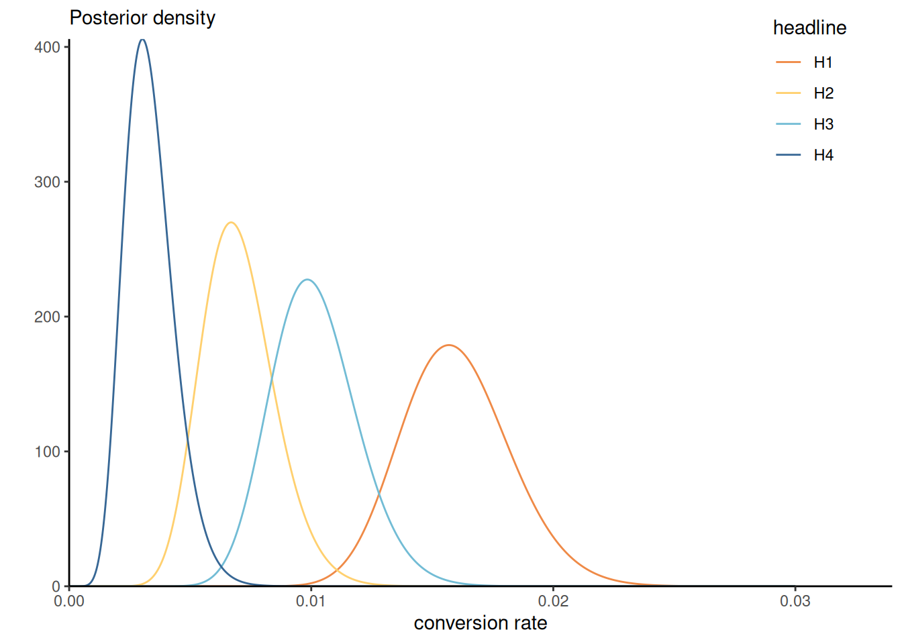

| headline | impressions | clicks |
|---|---|---|
| H1 | 3060 | 49 |
| H2 | 2982 | 20 |
| H3 | 3112 | 31 |
| H4 | 3083 | 9 |
2 Priors
The posterior distribution combines two ingredients: the likelihood and the prior. If the former is a standard ingredient of any likelihood-based inference, prior specification requires some care. The purpose of this chapter is to consider different standard way of constructing prior functions.
2.1 Conjugate priors
A distribution belongs to an exponential family with parameter vector \(\boldsymbol{\theta} \in \mathbb{R}^D\) if it can be written as \[\begin{align*} f(y; \boldsymbol{\theta}) = \exp\left\{ \sum_{k=1}^K Q_k(\boldsymbol{\theta}) t_k(y) + D(\boldsymbol{\theta})\right\} \end{align*}\] and in particular, the support does not depend on unknown parameters. If we have an independent and identically distributed sample of observations \(y_1, \ldots, y_n\), the log likelihood is thus of the form \[\begin{align*} \ell(\boldsymbol{\theta}) = \sum_{k=1}^K \phi_k(\boldsymbol{\theta}) \sum_{i=1}^n t_k(y_i) + n D(\boldsymbol{\theta}), \end{align*}\] where the collection \(\sum_{i=1}^n t_k(y_i)\) (\(k=1, \ldots, K\)) are sufficient statistics and \(\phi_k(\boldsymbol{\theta})\) are the canonical parameters. The number of sufficient statistics are the same regardless of the sample size. Exponential families play a prominent role in generalized linear models, in which the natural parameters are modelled as linear function of explanatories.
A log prior density that is proportional to \[\begin{align*} \log p(\boldsymbol{\theta}) \propto \eta D(\boldsymbol{\theta}) + \sum_{k=1}^K Q_k(\boldsymbol{\theta}) \nu_k \end{align*}\] is conjugate.
Example 2.1 (Conjugate priors for the binomial model) The binomial log density with \(y\) successes out of \(n\) trials is proportional to \[\begin{align*} y \log(p) + (n-y) \log(1-p) = y\log\left( \frac{p}{1-p}\right) + n \log(1-p) \end{align*}\] with canonical parameter \(\mathrm{logit}(p)\), which is the natural link function for Bernoulli, giving rise to logistic regresion model.
Since the density of the binomial is of the form \(p^y(1-p)^{n-y}\), the beta distribution \(\mathsf{Be}(\alpha, \beta)\) with density \(f(x) \propto x^{\alpha-1} (1-x)^{\beta-1}\) is the conjugate prior.
The posterior mean \[\begin{align*} \mathsf{E}(p \mid y) = w\frac{y}{n} + (1-w) \frac{a}{a+b}, \qquad w = \frac{n}{n+a+b} \end{align*}\] is therefore a weighted average of the maximum likelihood estimator and the prior mean. We can think of the parameter \(\alpha\) (respectively \(\beta\)) as representing the prior number of success (resp. failures).
Example 2.2 (Conjugate prior for the Poisson model) The Poisson distribution with mean \(\mu\) has log density proportional to \(f(y; \mu) \propto y\log(\mu) -\mu\), so is an exponential family with natural parameter \(\log(\mu)\). The gamma distribution, \(p(x) \propto \beta^{\alpha}/\Gamma(\alpha)x^{\alpha-1} \exp(-\beta x)\) with shape \(\alpha\) and rate \(\beta\) is the conjugate prior for the Poisson. For an \(n\)-sample of independent observations \(\mathsf{Po}(\mu)\) observations with \(\mu \sim \mathsf{Ga}(\alpha, \beta)\), the posterior is \(\mathsf{Ga}(\sum_{i=1}^n y_i + \alpha, \beta + n)\).
Example 2.3 (Posterior rates for A/B tests using conjugate Poisson model) Upworthy.com, a US media publisher, revolutionized headlines online advertisement by running systematic A/B tests to compare the different wording of headlines, placement and image and what catches attention the most. The Upworthy Research Archive (Matias et al. 2021) contains results for 22743 experiments, with a click through rate of 1.58% on average and a standard deviation of 1.23%. The clickability_test_id gives the unique identifier of the experiment, clicks the number of conversion out of impressions. See Section 8.5 of Alexander (2023) for more details about A/B testing and background information.
Consider an A/B test from November 23st, 2014, that compared four different headlines for a story on Sesame Street workshop with interviews of children whose parents were in jail and visiting them in prisons. The headlines tested were:
- Some Don’t Like It When He Sees His Mom. But To Him? Pure Joy. Why Keep Her From Him?
- They’re Not In Danger. They’re Right. See True Compassion From The Children Of The Incarcerated.
- Kids Have No Place In Jail … But In This Case, They Totally Deserve It.
- Going To Jail Should Be The Worst Part Of Their Life. It’s So Not. Not At All.
At first glance, the first and third headlines seem likely to lead to a curiosity gap. The wording of the second is more explicit (and searchable), whereas the first is worded as a question.
We model the conversion rate \(\lambda_i\) for each headline separately using a Poisson distribution and compare the posterior distributions for all four choices. Using a conjugate prior and selecting the parameters by moment matching yields approximately \(\alpha = 1.64\) and \(\beta = 0.01\) for the hyperparameters.

We can visualize the posterior distributions. In this context, the large sample size lead to the dominance of the likelihood contribution \(p(Y_i \mid \lambda_i) \sim \mathsf{Po}(n_i\lambda_i)\) relative to the prior. We can see there is virtually no overlap between different rates for headers H1 (preferred) relative to H4 (least favorable). The probability that Headline 3 is better than Headline 1 can be approximated by simulating samples from both posterior and computing the proportion of times one is larger: the probability of superiority is 1.7%, indicating a clear preference for the first headline H1.
Example 2.4 (Conjugate priors in the Bayesian linear model) Consider a linear regression model with observation-specific mean \(\mu_i = \mathbf{x}_i\boldsymbol{\beta}\) \((i=1,\ldots, n)\) with \(\mathbf{x}_i\) the \(i\)th row of the \(n \times p\) design matrix \(\mathbf{X}\).
Concatenating records, \(\boldsymbol{Y} \sim \mathsf{No}_n(\mathbf{X}\boldsymbol{\beta}, \sigma^2 \mathbf{Q}_y^{-1})\), for a known precision matrix \(\mathbf{Q}_y\), typically \(\mathbf{I}_n\). To construct a conjugate joint prior for \(p(\boldsymbol{\beta}, \sigma^2)\), we consider the sequential formulation \[\begin{align*} \boldsymbol{\beta} \mid \sigma^2 \sim \mathsf{No}_p(\boldsymbol{\nu}_\beta, \sigma^2 \mathbf{Q}^{-1}_\beta), \qquad \sigma^2 \sim \mathsf{IG}(\alpha,\beta) \end{align*}\] where \(\mathsf{IG}\) denotes the inverse gamma distribution1
The joint posterior is Gaussian-inverse gamma and can be factorized \[\begin{align*} p(\boldsymbol{\beta}, \sigma^2 \mid y) = p(\sigma^2 \mid y) p(\boldsymbol{\beta} \mid \sigma^2, y) \end{align*}\] where \(p(\sigma^2 \mid y) \sim \mathsf{IG}(\alpha^*, \beta^*)\) and \(p(\boldsymbol{\beta} \mid \sigma^2, y) \sim \mathsf{No}_p(\mathbf{M}\boldsymbol{m}, \sigma^2\mathbf{M})\) with \(\alpha^* = \alpha + n/2\), \(\beta^*=\beta + 0.5 \boldsymbol{\nu}_\beta^\top \mathbf{Q}_\beta\boldsymbol{\nu}_\beta + \boldsymbol{y}^\top\boldsymbol{y} - \boldsymbol{m}^\top\mathbf{M}\boldsymbol{m}\), \(\boldsymbol{m} = \mathbf{Q}_\beta \boldsymbol{\nu}_\beta + \mathbf{X}^\top \mathbf{Q}_y\boldsymbol{y}\) and \(\mathbf{M} = (\mathbf{Q}_\beta + \mathbf{X}^\top\mathbf{Q}_y\mathbf{X})^{-1}\); the latter can be evaluated efficiently using Shermann–Morrisson–Woodbury identity.
The exponential family is quite large; Fink (1997) A Compendium of Conjugate Priors gives multiple examples of conjugate priors and work out parameter values.
One criticism of the Bayesian approach is the arbitrariness of prior functions. However, the role of the prior is often negligible in large samples (consider for example the posterior of exponential families with conjugate priors). Moreover, the likelihood is also chosen for convenience, and arguably has a bigger influence on the conclusion. Data fitted using a linear regression model seldom follow Gaussian distributions conditionally, in the same way that the linearity is a convenience (and first order approximation).
In general, unless the sample size is small and we want to add expert opinion, we may wish to pick an uninformative prior, i.e., one that does not impact much the outcome. For conjugate models, one can often show that the relative weight of prior parameters (relative to the random sample likelihood contribution) becomes negligible by investigating their relative weights.
2.2 Uninformative priors
Definition 2.1 (Proper prior) We call a prior proper if it’s integral is finite; such prior function automatically leads to a valid posterior.
The best example of prior priors arise from probability density function. We can still employ this rule for improper priors: for example, taking \(\alpha, \beta \to 0\) in the beta prior leads to a prior proportional to \(x^{-1}(1-x)^{-1}\), the integral of which diverges on the unit interval \([0,1]\). However, as long as the number of success and the number of failures is larger than 1, meaning \(k \geq 1, n-k \geq 1\), the posterior distribution would be proper, i.e., integrable. To find the posterior, normalizing constants are also superfluous.
Many uninformative priors are flat, or proportional to a uniform on some subset of the real line and therefore improper. It may be superficially tempting to set a uniform prior on a large range to ensure posterior property, but the major problem is that a flat prior may be informative in a different parametrization, as the following example suggests.
Example 2.5 Consider the parameter \(\log(\tau) \in \mathbb{R}\) and the prior \(p( \log \tau) \propto 1\). If we reparametrize the model in terms of \(\tau\), the new prior (including the Jacobian of the transformation) is \(\tau^{-1}\)
Some priors are standard and widely used. In location scale families with location \(\nu\) and scale \(\tau\), the density is such that \[\begin{align*} f(x; \nu, \tau) = \frac{1}{\tau} f\left(\frac{x - \nu}{\tau}\right), \qquad \nu \in \mathbb{R}, \tau >0. \end{align*}\] We thus wish to have a prior so that \(p(\tau) = c^{-1}p(\tau/c)\) for any scaling \(c>0\), whence it follows that \(p(\tau) \propto \tau^{-1}\), which is uniform on the log scale.
The priors \(p(\nu) \propto 1\) and \(p(\tau) \propto \tau^{-1}\) are both improper but lead to location and scale invariance, hence that the result is the same regardless of the units of measurement.
Definition 2.2 (Jeffrey’s prior) In single parameter models, taking a prior function for \(\theta\) proportional to the square root of the determinant of the information matrix \(p(\theta) \propto \imath(\theta)\) yields a prior that is invariant to parametrization, so that inferences conducted in different parametrizations are equivalent.
To see this, consider a bijective transformation \(\theta \mapsto \vartheta\). Under the reparametrized model and suitable regularity conditions2, the chain rule implies that \[\begin{align*} i(\vartheta) &= - \mathsf{E} \left(\frac{\partial^2 \ell(\vartheta)}{\partial^2 \vartheta}\right) \\&= - \mathsf{E}\left(\frac{\partial^2 \ell(\theta)}{\partial \theta^2}\right) \left( \frac{\mathrm{d} \theta}{\mathrm{d} \vartheta} \right)^2 + \mathsf{E}\left(\frac{\partial \ell(\theta)}{\partial \theta}\right) \frac{\mathrm{d}^2 \theta}{\mathrm{d} \vartheta^2} \end{align*}\] Since the score has mean zero, \(\mathsf{E}\left\{\partial \ell(\theta)/\partial \theta\right\}=0\), the rightmost term vanishes. We can thus relate the Fisher information in both parametrizations, with \[\begin{align*} \imath^{1/2}(\vartheta) = \imath^{1/2}(\theta) \left| \frac{\mathrm{d} \theta}{\mathrm{d} \vartheta} \right|, \end{align*}\] implying invariance.
Most of the times, Jeffrey’s prior is improper. For the binomial model, it can be viewed as a limiting conjugate beta prior with \(\alpha, \beta\to 0\)). Unfortunately, in multiparameter models, the system isn’t invariant to reparametrization if we consider the determinant of the Fisher information.
Example 2.6 Consider the binomial distribution \(f(y; \theta, n) \propto \theta^y(1-\theta)^{n-y}\mathsf{I}_{\theta \in [0,1]}\). The negative of the second derivative of the log likelihood with respect to \(p\) is \(\jmath(\theta) = - \partial^2 \ell(\theta; y) / \partial \theta^2 = y/\theta^2 + (1-y)/(1-\theta)^2\) and since \(\mathsf{E}(Y)=n\theta\), thus the Fisher information is \(\imath = \mathsf{E}\{\jmath(\theta)\}=n/\theta + n/(1-\theta) = n/\{\theta(1-\theta)\}\).3
Jeffrey’s prior is thus \(p(\theta) \propto \theta^{-1}(1-\theta)^{-1}\).
Check that for the Gaussian distribution \(\mathsf{No}(\mu, \sigma^2)\), the Jeffrey’s prior obtained by treating each parameter in turn, fixing the value of the other, are \(p(\mu) \propto 1\) and \(p(\sigma) \propto 1/\sigma\), which also correspond to the default uninformative priors for location-scale families.
Example 2.7 The Poisson distribution with \(\ell(\lambda) \propto -\lambda + y\log \lambda\), with second derivative \(-\partial^2 \ell(\lambda)/\partial \lambda^2 = y/\lambda^2\). Since the mean of the Poisson distribution is \(\lambda\), the Fisher information is \(\imath(\lambda) = \lambda^{-1}\) and Jeffrey’s prior is \(\lambda^{-1/2}\).
2.3 Expert knowledge
Th prior distribution may have parameters themselves that need to be specified by experts. One may also wish to add another layer and set an hyperprior distribution on the parameters, resulting in a hierarchical model.
Setting parameters of priors is often done by reparametrizing the latter in terms of moments. Sometimes, it may be easier to set priors in a different scale where subject-matter expertise is most easily elicited.
Example 2.8 The generalized extreme value distribution arises as the limiting distribution for the maximum of \(m\) independent observations. The \(\mathsf{GEV}(\mu, \sigma, \xi)\) distribution is a location-scale with distribution function \[\begin{align*} F(x) = \exp\left\{ - \left(1+\xi(x-\mu)/\sigma\right)^{-1/\xi}_{+}\right\} \end{align*}\] where \(x_{+} = \max\{0, x\}\).
Inverting the distribution function yields the quantile function \[\begin{align*} Q(p) \mu + \sigma \frac{(-\log p)^{-\xi}-1}{\xi} \end{align*}\]
In environmental data, we often model annual maximum. Engineering designs are often specified in terms of the \(k\)-year return levels, defined as the quantile of the annual maximum exceeded with probability \(1/k\) in any given year. Using a \(\mathsf{GEV}\) for annual maximum, Coles and Tawn (1996) proposed modelling annual daily rainfall and specifying a prior on the quantile scale \(q_1 < q_2 < q_3\) for tail probabilities \(p_1> p_2 > p_3\). To deal with the ordering constraints, gamma priors are imposed on the differences \(q_1 - o \sim \mathsf{Ga}(\alpha_1, \beta_1)\), \(q_2 - q_1 \sim \mathsf{Ga}(\alpha_2, \beta_2)\) and \(q_3-q_2 \sim \mathsf{Ga}(\alpha_3, \beta_3)\), where \(o\) is the lower bound of the support. The prior is thus of the form
\[\begin{align*} p(\boldsymbol{q}) \propto q_1^{\alpha_1-1}\exp(-\beta_1 q_1) \prod_{i=2}^3 (q_i-q_{i-1}^{\alpha_i-1} \exp\{\beta_i(q_i-q_{i-1})\}. \end{align*}\] where \(0 \leq q_1 \leq q_2 \leq q_3\). We can then relate the prior parameters to moments.
Consider the annual maximum rainfall in Abisko, Sweden.
Example 2.9 (Prior simulation) Are the prior reasonable? One way to see this is to sample values from the priors and generate new observations.
Example 2.10 We can specify gamma back-transform them to location \(\mu\), scale \(\sigma\) and shape \(\xi\) and simulate observations from the \(\mathsf{GEV}(\mu, \sigma, \xi)\) and compare them to observations.
This simply means that the precision \(\sigma^{-2}\), the reciprocal of the variance, has a gamma distribution with shape \(\alpha\) and rate \(\beta\).↩︎
Using Bartlett’s identity; Fisher consistency can be established using the dominated convergence theorem.↩︎
The Fisher information is linear in the sample size for independent and identically distributed data.↩︎